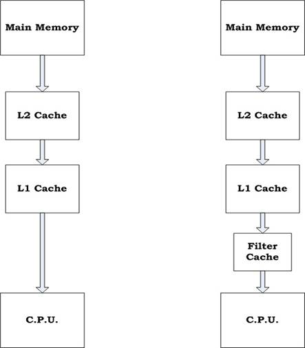

Motivation Back
Caches clearly present one of the most attractive targets for power reduction. Power reduction in caches can be achieved through:
- Semiconductor process improvement
- Memory Cell redesign
- Voltage reduction
- Optimized cache structure
An energy efficient cache structure is the primary means by which a computer architect can contribute towards this problem. Traditionally, power reduction has been achieved by sacrificing arbitrary amounts of performance. The filter cache design is motivated by this fact.
Filter Cache Architecture

Fig.1 Normal 2-level cache vs. Filter cache
The filter cache architecture makes use of a first level cache that is very small relative to conventional designs. This cache has reduced power dissipation relative to the traditional cache architecture, albeit at the expense of decreased hit ratio. The hypothesis behind the design is that the decrease in power consumption will compensate for the loss in performance.
In this new design, the L1 cache is only accessed as a consequence of a miss in the filter cache, otherwise it is not cycled and remains in a standby mode. Thus, although the L1 cache has a similar design in both cases, it will require an additional clock cycle for access with the filter cache. Because the filter cache is smaller than the L1 cache, it will generally have a faster access time. While this phenomenon may present an opportunity to increase the processor clock, it will necessarily increase in the latency for access to the L1 cache.
Analysis of different configurations within Hotspot cache architecture is shown in the simulations performed. Analysis